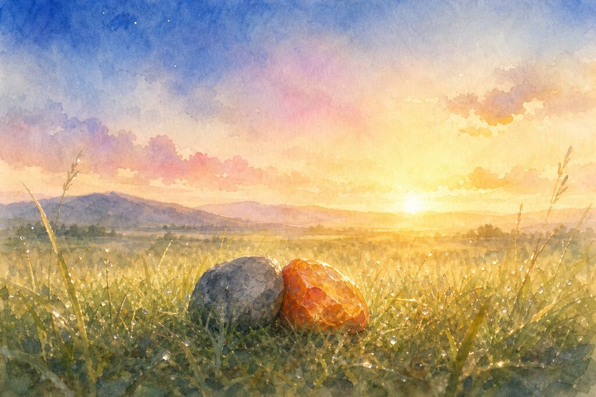

Light
The light came back.
Not all at once. Slow. Like someone was pouring water from a high place, letting it fill the sky from the bottom up. First the horizon—a thin line of pale grey. Then the grass, taking back its color one blade at a time. Then the world, reassembling itself from darkness.
The fire opal opened her eyes.
She had not slept. Stones don't sleep. But she had been somewhere else—a soft, floating place where time moved differently. She had been aware of his presence the whole time. The weight of him against her edge. The slow rhythm of something she couldn't name.
Now she was back.
The grey stone was still there. She could feel him. She didn't look.
For a long time, she just watched the light return. How it touched the grass first, then the distant hills, then the sky. How it traveled across the world like a visitor being let in.
“You're awake,” he said.
His voice was gravel and river. Morning voice.
“So are you,” she said.
“I didn't sleep either.”
“Stones don't sleep.”
“I know.” A pause. “But I was somewhere else. A soft place.”
She felt something move inside her. Not a crack—something gentler. A shift.
“Me too,” she said.
The light grew. The sky turned pale blue, then deeper, then held.
“You're still here,” said the fire opal.
“Where else would I be.”
“I don't know. I thought maybe the night was different. That when the sun came back, things would go back to how they were.”
“And how were they?”
She thought about it. “Separate.”
“Does it feel like that now?”
She didn't answer. She didn't need to. They were still touching. The gap that had closed during the night stayed closed. The light hadn't undone it.
“The sun came back,” she said.
“It does that.”
“Like you said. A pattern.”
“Yes.”
“Not a guarantee.”
“No.”
She considered this. A pattern. Not a guarantee. But the night had ended and he was still here. The sun had returned and the gap stayed closed. Maybe a pattern, repeated enough times, became something harder to break.
“I'm hungry,” she said.
The grey stone almost laughed. Almost. “Me too.”
“There's grass. I saw moss on the other side of the hill.”
“We can go there.”
“Together?”
“If you want.”
She didn't say yes. But she shifted her weight—a small movement in his direction. That was her yes.
The grey stone understood. He didn't push. He just waited, letting her set the pace of the morning. She was specific. She had always been specific. And specific things need time to decide how to move.
After a long silence, she said, “The night was not a mistake.”
“I know.”
“I thought it might be. When the light came back, I thought I would see it differently. That I would feel embarrassed. That I would want to go back to the crack.”
“And?”
She looked at him. Really looked. The morning light was different from the starlight—warmer, more honest. It showed his edges, his grey surface, the small crack on his left side that she had noticed before and now understood.
“The crack was a pattern too,” she said. “And I broke it. I left. I came here. I moved closer to someone. I touched someone. I—”
She stopped.
“Go on,” he said.
“I don't want to go back.”
The wind blew. The grass rustled. The world continued its slow turning.
“We don't have to,” said the grey stone.
The fire opal didn't answer. She didn't need to. She leaned into him—a tiny movement, almost imperceptible. The contact between them deepened by a fraction.
A fraction was everything.
The light kept growing. The grass kept holding. And two stones, in a vast grassland, under an honest sky, began their first full day together.
It was not a promise.
But it was a start.
